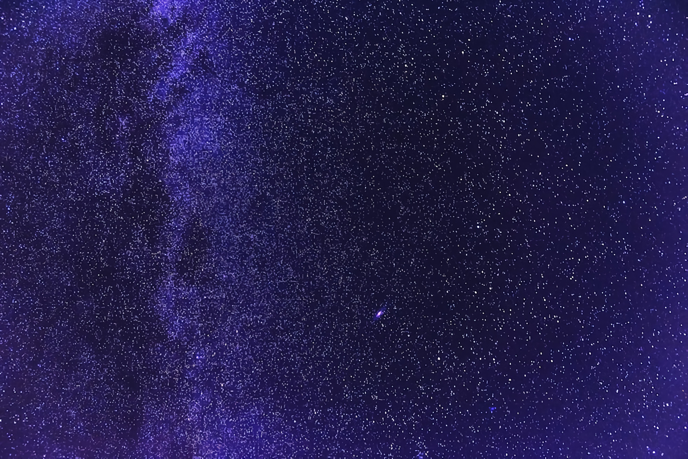

Andando no jardim de sua casa você de depara com um fragmento, tão escuro como o céu da noite.
Ao pegar o fragmento ele te mostras maravilhas que há da onde ele veio, ao ver mais você sente que ele quer voltar para lá.

Ao dormir você começa a ter uma dor de cabeça e visões de um local que para você é familiar, o que fazer?
Ao segurar o fragmento por algum tempo, você é mandando para um vacuo que você sente nada, para onde vamos?
Após um tempo você vê uma pequena luz ao longe que parece ficar mais forte, ao ir na direção dela ela começa a se mover querendo que você a siga, vamos seguir ela?